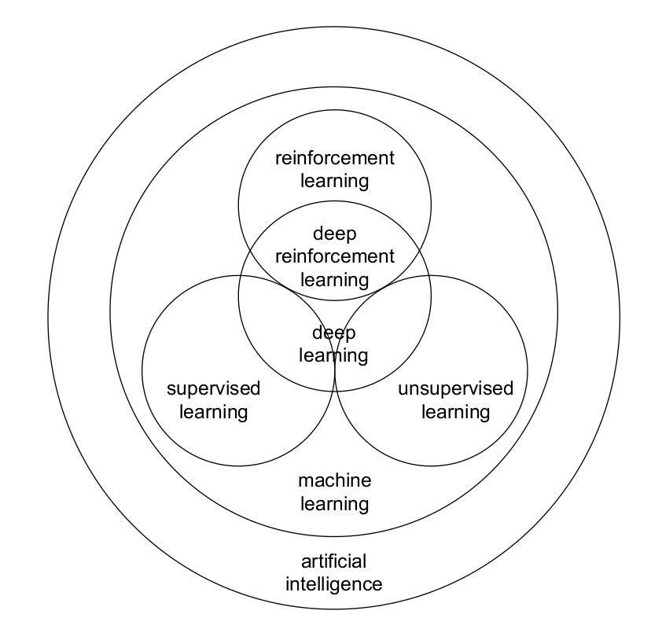
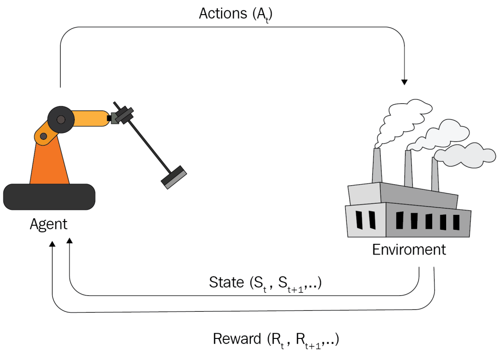

Learning Dexterous Manipulation with Model-Free Deep Reinforcement Learning
Thesis Advisor: Ph.D. Reyes Ríos Cabreara
Author: Luis Castillo
Author: Luis Castillo
Presentation outline
Introduction
Deep Reinforcement Learning (Deep RL) methods have great potential in real-world application. They have recently shown that it can solve tasks with superior human performance in some scenarios, e.g. classic Atari games (Mnih et al. 2013), massive online multiplayer games (OpenAI 2018), or complicated board games (Silver et al. 2017).
Deep RL algorithms can be used to learn to control physical robots in real-time (Gao et al. 2020). Deep RL agents learn to solve a given task by interacting with an unknown, unstructured environment. Due to its simple and intuitive fundamentals and its great potential to solve complex problems, Deep RL has become one of the most appealing branches of artificial intelligence.
State of the art
(Peng et al. 2018) propose to use dynamics randomization to train recurrent policies in simulation, and deploy the learned policies directly on a physical robot, achieving good performance on an object pushing task, without calibration.
(OpenAI et al. 2018) proposes to learn dexterous manipulation with a five finger articulated hand, using Proximal Policy Optimization (PPO), with dynamic randomization (DR) in the simulation, achieving very good results in the physical system.
(Akkaya et al. 2019) proposes a new algorithm to modify the dynamics of the simulator automatically called Automatic Domain Randomization (ADR), substantially improving the results obtained with DR. This is demonstrated by solving the Rubik’s cube with a robotic hand.
Proposal description
Motivation
In most cases, the dynamic process of robotic control can be approximated as a Markov Decision Process (MDP) making it an ideal field to experiment with Deep RL algorithms.
In addition, recently, large technology companies and prestigious research centers have focused their research in this area, such as OpenAI, who solved the Rubik’s cube with a five-finger articulated robotic hand completely in simulation.
Training in simulation and then transferring learned policy to physical systems (i.e sim-to-real) or using expert human demonstrations are two approaches that satisfy computational and safety requirements in robot learning tasks. Furthermore, robot simulators have been widely developed for decades, e.g. CoppeliaSim, MuJoCo, Gazebo and Pybullet.
Background
Machine learning (ML) is the field of AI that studies the process of learning from data to make predictions and/or decisions. It is generally categorized into supervised, unsupervised and reinforcement learning.

Reinforcement learning
Reinforcement Learning (RL) is a subfield of ML that address the problem of automatic learning for optimal decisions over time. The main characters of the RL are the agent and the environment. The environment is the world where the agent lives and with which he interacts.

Deep Reinforcement Learning
DRL is to combine the advantages of DL and RL for building AI systems. The main reason to use DL in RL is to leverage the scalability of DNN in high-dimensional space, e.g. the value function approximation utilizes the data representation of DNN to represent the highly compositional data distribution through end-to-end gradient-based optimization.
Problem Statement
Humans can solve many activities that are presented to us in our daily life without much effort, e.g. move and throw objects, open doors or write. However, although these tasks may seem simple, they require a certain degree of dexterous, which we humans learn through experience.

Trying to solve these activities with a robot following traditional robot control approaches represents a big challenge, because it is necessary to solve complex dynamic models and consider many uncertainties in the process.

However, the latest advances in RL applied to robotic control have shown that it is possible to teach robots to solve this kind of tasks similarly to how a baby learn to walk; by trial and error.

This learning can be obtained directly on the physical robot, but this involves a couple of problems:
Data sampling is very inefficient and it would take hundreds of hours to solve a task, in addition to the need to design an automatic system to restart the physical test environment or directly depend on human operators.
And some Deep RL methods employ scanning mechanisms that could result in dangerous actions for the robot and the surrounding environment.
A very attractive alternative is gather all the data necessary for the training purely in simulation, and then deploy the learned control policy in a physical robot.
However, simulation environments do not represent the full complexity of the real world, and the policies learned in these virtual environments only perform well under conditions similar to those seen during the training phase. This disparity between virtual simulation environments and the real world is known as the “reality gap”.
But, in the latest advances in Deep RL applied to robot control have shown (Peng et al. 2018sim, Akkaya et al. 2019) that it is possible to overcome this barrier using techniques that randomly modify the dynamics of the simulator during the training phase in order to expose the agent to a wide range of variations in the environment, this forces the agent to learn to adapt to the constant changes in the environment.

Hypothesis
If we randomly modify the dynamics of a simulation environment in order to learn a robust control policy for solving a dexterous manipulation task, then it is possible to transfer this learned policy to a physical robot and solve the task without any fine-tuning.
General objective
The general objective of this thesis project is:
Train an agent purely in simulation to solve a specific dexterous manipulation task using reinforcement learning algorithms and domain randomization techniques to transfer the learned policy in a physical robot
Specific objectives
The following objectives emerge from the main objective of this research:
- Select a state-of-the-art simulator that meets the requirements of the selected task and reinforcement learning algorithms.
- Document me in the use of the selected robotics simulator and generate the virtual test environment for the selected task.
- Review of the state-of-the-art in reinforcement learning algorithms for robot control.
- Implement one or more of the state-of-the-art RL algorithms for robot control to solve the selected task in the simulation environment (without domain randomization).
- Review of the state-of-the-art of domain randomization techniques.
- Implement state-of-the-art techniques in domain randomization and retrain the agent to solve the selected task.
- Transfer the policies learned in simulation (with and without domain randomization) to the physical robot and make a comparison of performance in the selected task.
- Communicate the results.
Scientific contribution
The main contribution of this work is to solve a dexterous manipulation task\(^{*}\) with a redundant serial robot by training an agent purely in simulation.
Chronogram of activities
References
Ilge Akkaya, Marcin Andrychowicz, Maciek Chociej, Mateusz Litwin, Bob McGrew, Arthur Petron, Alex Paino, Matthias Plappert, Glenn Powell, Raphael Ribas, et al. Solving rubik’s cube with a robot hand. arXiv preprint arXiv:1910.07113, 2019.
OpenAI, Marcin Andrychowicz, Bowen Baker, Maciek Chociej, Rafal Jozefowicz, Bob McGrew, Jakub Pa- chocki, Arthur Petron, Matthias Plappert, Glenn Powell, Alex Ray, Jonas Schneider, Szymon Sidor, Josh Tobin, Peter Welinder, Lilian Weng, and Wojciech Zaremba. Learning dexterous in-hand manipulation, 2018.
Wenbo Gao, Laura Graesser, Krzysztof Choromanski, Xingyou Song, Nevena Lazic, Pannag Sanketi, Vikas Sindhwani, and Navdeep Jaitly. Robotic table tennis with model-free reinforcement learning. arXiv preprint arXiv:2003.14398, 2020.
Volodymyr Mnih, Koray Kavukcuoglu, David Silver, Alex Graves, Ioannis Antonoglou, Daan Wierstra, and Martin Riedmiller. Playing atari with deep reinforcement learning. arXiv preprint arXiv:1312.5602, 2013.
OpenAI. Openai five. https://blog.openai.com/openai-five/, 2018.
Xue Bin Peng, Marcin Andrychowicz, Wojciech Zaremba, and Pieter Abbeel. Sim-to-real transfer of robotic control with dynamics randomization. In 2018 IEEE international conference on robotics and automation (ICRA), pages 1–8. IEEE, 2018.
David Silver, Thomas Hubert, Julian Schrittwieser, Ioannis Antonoglou, Matthew Lai, Arthur Guez, Marc Lanctot, Laurent Sifre, Dharshan Kumaran, Thore Graepel, et al. Mastering chess and shogi by self-play with a general reinforcement learning algorithm. arXiv preprint arXiv:1712.01815, 2017.
Xingyou Song, Yuxiang Yang, Krzysztof Choromanski, Ken Caluwaerts, Wenbo Gao, Chelsea Finn, and Jie Tan. Rapidly adaptable legged robots via evolutionary meta-learning. arXiv preprint arXiv:2003.01239, 2020.
Jie Tan, Tingnan Zhang, Erwin Coumans, Atil Iscen, Yunfei Bai, Danijar Hafner, Steven Bohez, and Vincent Vanhoucke. Sim-to-real: Learning agile locomotion for quadruped robots. arXiv preprint arXiv:1804.10332, 2018.
Josh Tobin, Rachel Fong, Alex Ray, Jonas Schneider, Wojciech Zaremba, and Pieter Abbeel. Domain randomization for transferring deep neural networks from simulation to the real world. In 2017 IEEE/RSJ International Conference on Intelligent Robots and Systems (IROS), pages 23–30. IEEE, 2017.
Andy Zeng, Shuran Song, Johnny Lee, Alberto Rodriguez, and Thomas Funkhouser. Tossingbot: Learning to throw arbitrary objects with residual physics. IEEE Transactions on Robotics, 2020.